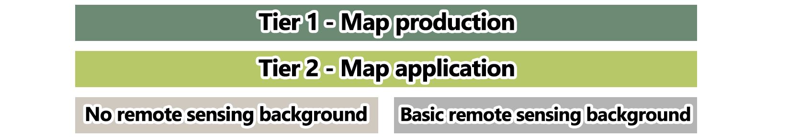
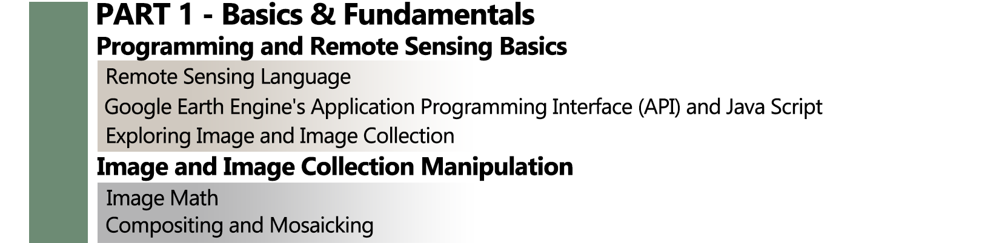
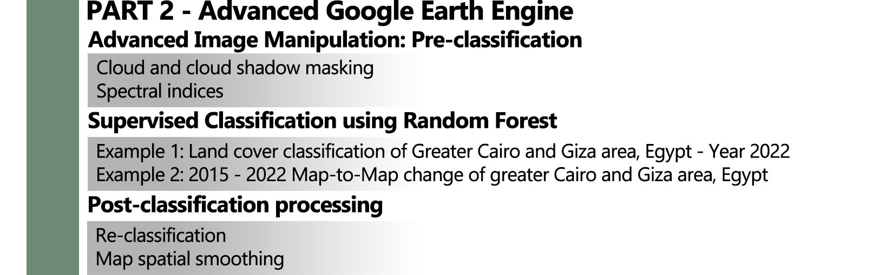
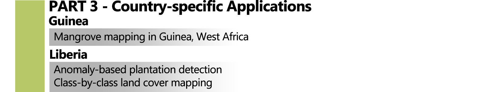

Supervised Land Cover Classification with Google Earth Engine
2022-08-03
Introduction and overview
Welcome to Supervised Land Cover Classification with Google Earth Engine! This online classification tutorial is a byproduct of the work conducted under the NASA-Conservation Partnership, signed in 2018, with the overarching goal of assisting African nations to account for their ecosystem services and natural capital. More specifically, we aimed to develop repeatable methodologies to map land cover and ecosystem extent, meet international standards for ecosystem accounting, and satisfy the requirements of a broad range of nation specific decision support needs. This tutorial will include the steps taken through two work-streams to develop ecosystem extent maps:
Figure 0.1: NASA- and Conservation International-led work-streams: land cover and plant dissimilarity for ecosystem mapping.
This tutorial is broadly organized in four parts: These parts are divided into Map production and Map application tiers and whether or not each section requires basic remote sensing knowledge. An overview of the tutorial structure is shown below:

The first half of the TIER 1 (PART 1) is designed to provide you with the basic remote sensing knowledge to understand the concepts that will be discussed in the following sections. Also, it aims to take you from being a complete Earth Engine novice to being fairly familiarized with its basic functionalities. Those who are almost entirely unfamiliar with remote sensing data, or are almost entirely unfamiliar with programming, or both, are encouraged to start at the beginning (Programming and Remote Sensing Basics). This section assumes that the user has no remote sensing background and programming experience, and begins with the most fundamental first steps.

The second the half of TIER 1 (PART 2), presents you with a guided tour of the world of satellite imagery classification using Google Eart Engine! In this section we explore the overall approach of image classification using real life and real location examples: from the pre-classification steps of preparing the imagery to post-classification procedures to enhance your classification outputs.

The TIER 2 is designed to apply all the concepts and techniques covered in PART 1 and 2 for for country-specific appliactions.
